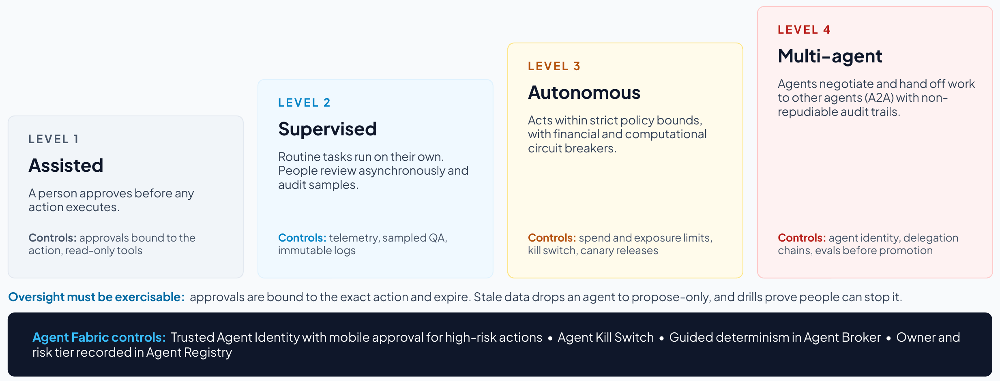

Section 4
Orchestration: coordinating models, agents and workloads
Orchestration is the decision layer that turns governed capabilities into coordinated action, by determining who and what can act, in which environments and under which constraints. Many current efforts focus on connecting individual platforms and protocols, but the greater operating leverage may come from orchestrating intelligence across the enterprise.1
Route every task to the right model, place and price
At the center of orchestration is model routing, in which an intelligent router decides in real time which model should handle a task, where inference should run, and which cost, latency and regulatory constraints apply.1 A practical pipeline has four steps:
- Task ingestion: parse the request and classify intent, sensitivity and the capability required.
- Policy filter: mask personal data and check entitlements, residency and sovereignty rules.
- Model selection: balance accuracy, latency and cost across frontier, open-source, specialized, self-hosted and packaged SaaS models.
- Dispatch and log: execute in the cloud, on premises or at the edge, and log every model interaction for audit.
A frontier model is not needed for every task. AI cost control starts with routing routine extraction and classification to smaller, cheaper models and reserving frontier models for complex reasoning. The size of the savings depends on each organization’s task mix, so measure it during implementation instead of assuming it. Placement matters as well, since a latency-sensitive workload in a hospital or factory may need to run at the edge even when cloud execution is cheaper.1
In MuleSoft Agent Fabric these controls sit in AI Gateway: intelligent model routing, token-based rate limits and spend attributed by team, app and use case,21 along with LLM Governance, which provides centralized visibility into token usage, cost and data flows for third-party models.21
Most enterprises cannot yet see what their agents cost. In KPMG’s second-quarter 2026 AI pulse, only 26% of organizations reported full, real-time visibility into what their AI systems cost to operate, and by the third quarter 43% had set usage or token budgets.8 Treat cost visibility as a control. Tag every model and tool call to an owner, a use case and a cost center, and alert as spend nears its budget.14 Then compare the cost of each completed outcome with the cost of the same work done by people, because the economics depend on the whole system of people and agents, of which the model bill is only one part.22 The FinOps Foundation’s guidance for AI adds unit measures such as cost per inference and per token, anomaly detection and time to business value, and its FOCUS specification gives billing data a common format that some providers already use to report token usage.23
Cost limits cap what agents spend, and exposure limits complement them by capping what agents do. A gateway that checks each call on its own cannot see that many individually valid actions add up to more than anyone approved, so the limits that matter to the business (money moved, records changed, load shifted) need to accumulate across calls, agents and sessions. Section 7 describes a custom gateway policy that does this.
Context engineering and dynamic discovery
As open-source AI and thousands of autonomous or semi-autonomous agents enter enterprise systems, people cannot anticipate every interaction or encode every path in advance.1 Hard-coded orchestration, with functions linked through rules and workflows baked into the architecture, becomes a liability. Context engineering and dynamic capability discovery reduce the dependence on it:
- Context engineering governs what each agent knows and can do. Airbyte defines context management as controlling what an agent can access at each decision point.24 The goal is just enough context at the right time, from trusted sources, because excess context degrades quality and inflates cost.
- Dynamic capability discovery lets agents find and coordinate by capability rather than fixed instruction. MCP Mesh25 illustrates the pattern: agents declare capabilities and dependencies, a registry discovers them and injects dependencies at runtime, and agents degrade gracefully if the registry is unavailable.
In Agent Fabric, Agent Registry is the capability catalog and Agent Broker routes work across agents and tools, combining LLM reasoning with guided determinism. That means fixed hand-off rules, written in Agent Script (the language also used to build Agentforce agents), wherever the business requires certainty.21
Open protocols for tools, agents and payments
Open standards reduce the cost of integration. The Model Context Protocol (MCP) standardizes how agents reach tools and data,26 and the Agent2Agent protocol (A2A) standardizes how agents collaborate.27 With both in place, one model can hand a request to another mid-workflow without a bespoke connector for every combination. The standards are also moving quickly, and 68% of IT leaders find them hard to keep up with.5
Both protocols are now projects of the Agentic AI Foundation, hosted by the Linux Foundation, and both changed substantially in 2026. A2A reached its first stable version, 1.0, in March 2026, adding version negotiation, multi-tenancy and signed agent cards that let one agent verify another’s identity.27 MCP’s July 2026 revision made the protocol stateless, removing sessions and the initialization handshake and requiring headers that name the method and tool on every HTTP request. It also documents how OpenTelemetry trace context travels with each call, tightens authorization checks and deprecates several features with a minimum 12-month window.26 Agent payments are moving the same way, after Google contributed its Agent Payments Protocol (AP2) to the FIDO Alliance in April 2026, where new working groups are developing standards for agent authentication and agent-initiated payments.28 Until those standards are settled, AP2 is best treated as pre-standard.
A control plane that absorbs protocol change protects the investment, because teams no longer re-implement each change themselves. Its registry can check signed agent cards, and its gateway can apply policy to MCP’s standard headers and join every call to its trace. Agent Fabric supports both protocols, with MCP Bridge turning APIs into MCP tools and pre-built connectors making agents A2A-compliant.21
Tier autonomy and bind each tier to controls
Agent autonomy should be tiered by level of authority, with each tier connected to specific controls, monitoring and rollback paths,1 so that autonomy grows only as the evidence for it does. A CDO Magazine governance plan29 adds operating discipline, calling for a move from a model-risk mindset to continuous runtime assurance, with autonomy levels, telemetry, kill switches, immutable logs and a balanced scorecard reported to executives monthly and to the AI governance board quarterly.
An approver named on paper may still lack the time, the information or the authority to act before an agent’s action takes effect, and research on human-oversight policies finds they can give a false sense of security for exactly this reason.30 Oversight works when the person can act on the system, knows enough to judge it and is free to intervene.31 The EU AI Act sets the same bar for high-risk systems, requiring that the people overseeing them can recognize automation bias, override the output and stop the system safely, and that deployers give them the competence, training, authority and support to do so.32 Oversight should therefore be measured by whether people can actually intervene in time (Section 9).
| Tier | Behavior | Required controls | Agent Fabric enablers |
|---|---|---|---|
| Level 1: Assisted | A person approves before any action executes |
|
|
| Level 2: Supervised |
|
|
|
| Level 3: Autonomous | Acts within strict policy bounds, with financial and computational circuit breakers |
|
|
| Level 4: Multi-agent | Agents negotiate and hand off work to other agents with non-repudiable audit trails |
|
|

At runtime, an approval covers one specific action for a limited time. If it has expired, or the action has changed, by the time the action reaches the gateway, the gateway refuses it and asks again. When the telemetry that people and agents rely on goes stale, the affected agents drop to propose-only until the data recovers, and in operational technology the fallback is the process’s engineered safe state rather than a blanket stop (Section 5).
Organizations that already classify agents with AWS’s Agentic AI Security Scoping Matrix, BCG’s four autonomy stages or KPMG’s agent types can map them to these tiers using the closest equivalents in the table, an approximate mapping by the author.33–35
| Tier | AWS scoping matrix | BCG autonomy stages | KPMG agent types (typical) |
|---|---|---|---|
| Level 1: Assisted | Scope 1, No Agency (read-only), and Scope 2, Prescribed Agency (human approval for consequential actions) |
|
|
| Level 2: Supervised | Scope 3, Supervised Agency (acts after a person starts the task, and people can step in) |
|
|
| Level 3: Autonomous | Scope 3, or Scope 4, Full Agency, for bounded operations | Guided autonomy | Automators |
| Level 4: Multi-agent | Scope 4, Full Agency | Full autonomy | Orchestrators |
Tiers move in both directions, and the rules for each move are set in advance:
- Promote on evidence. An agent moves up one tier only when its evaluations have met the next tier’s thresholds over a sustained period, its red-team findings are closed, its impact assessment is up to date (Section 5), and its owner and the risk function agree. BCG describes each stage as earned through demonstrated performance, and AWS advises expanding autonomy on demonstrated performance rather than granting it by default.33,34
- Demote automatically. An agent drops a tier, or to propose-only, without waiting for a meeting when a security event is detected, its evaluation scores fall below threshold, an approval fails its binding check, the telemetry it relies on goes stale, or it loses its sponsor. AWS recommends designing systems to reduce autonomy automatically when security events are detected, so that work continues safely while people investigate.33
Narrowing authority along a delegation chain
Multi-agent work turns one request into a chain of hand-offs, and each hop is a chance for authority to widen or for an unclear instruction to pass unchallenged. Research from Google DeepMind on intelligent delegation suggests four rules for every hop:36
- Split work into verifiable units. Break the request down, contract first, into tasks whose results can be checked before the next hop relies on them.
- Right-size each unit. Route each task to the least costly model or tool that meets its quality bar (see routing, above).
- Narrow permissions at every hop. A sub-agent gets only the permissions its own task needs, never the delegator’s full set, and never on the strength of a role it claims for itself.37
- Stop and ask. When a request is ambiguous, an agent challenges the delegator or asks a person, as its autonomy tier requires, instead of passing the ambiguity down the chain.
In the control plane this means on-behalf-of tokens that are exchanged and narrowed at each hop, and one trace that joins every hop, so a chain can be audited end to end and revoked at any link (Section 5).
Route workloads across infrastructure
Orchestration also reaches the infrastructure layer, where a digital gateway can route workloads dynamically by cost, latency, security and data sensitivity, replacing static hosting decisions with policy-based workload routing.1 Over time this may reach beyond a single enterprise to ecosystems in which organizations need shared standards for trust, cost, compliance and payments, which is another argument for open protocols and portable policy.